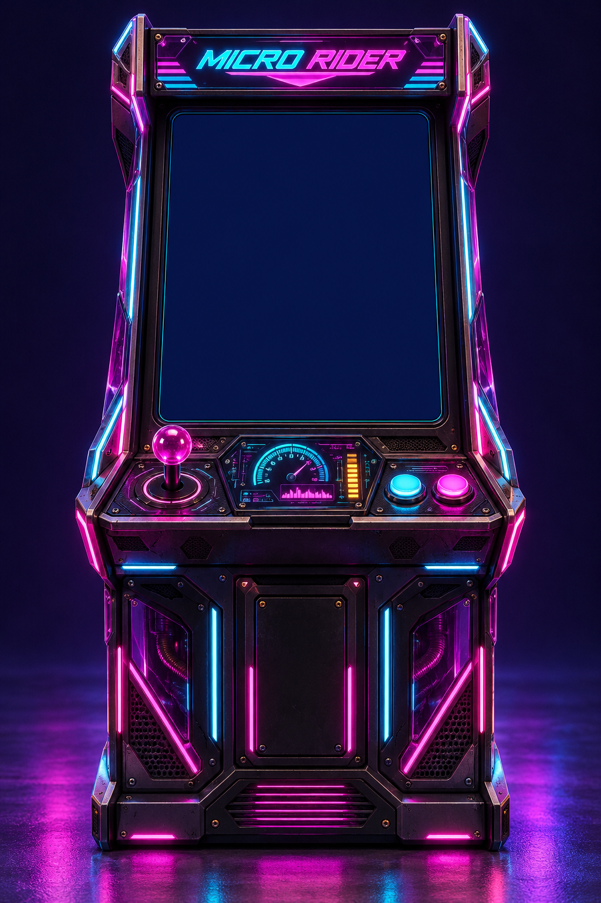
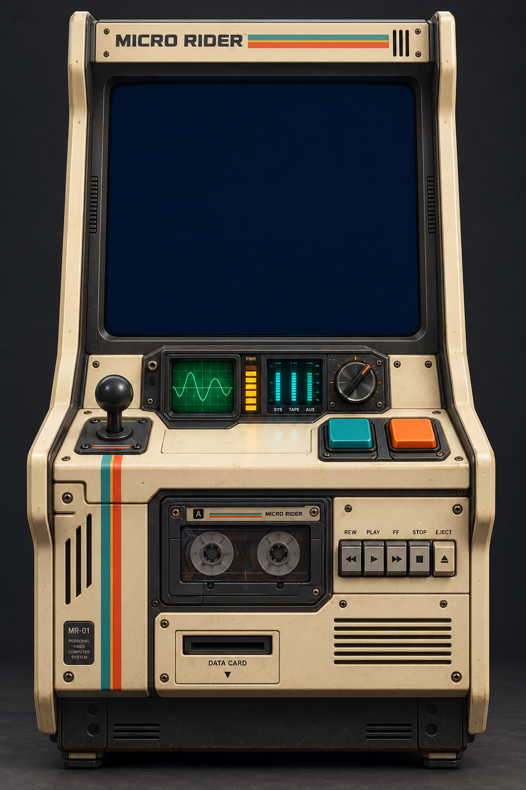
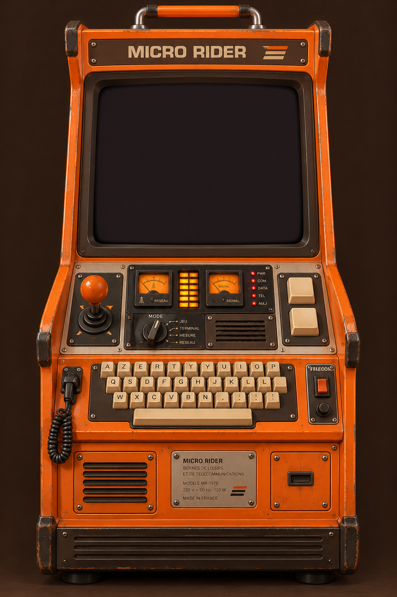
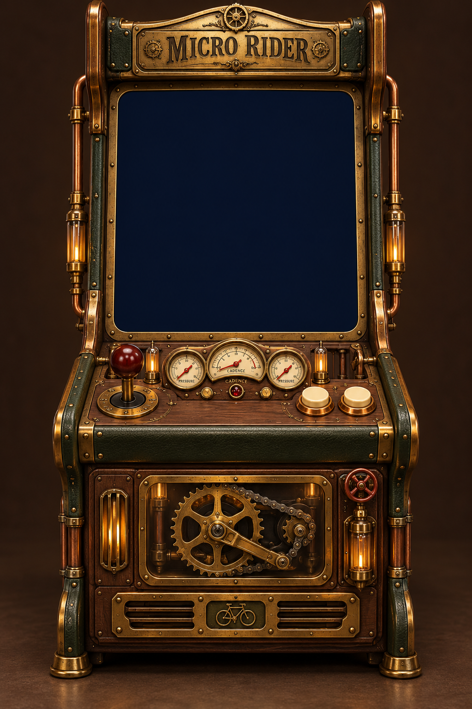

<!doctype html><html lang="fr"><meta charset="utf-8"><meta name="viewport" content="width=device-width,initial-scale=1"><title>Micro Rider — collection de bornes</title><style>*{box-sizing:border-box}body{margin:0;background:#0b101c;color:#f5ebd9;font-family:Arial,sans-serif}main{display:grid;grid-template-columns:1.3fr 1fr;align-items:center;min-height:100svh;max-width:1200px;margin:auto;padding:20px;gap:35px}#hero{height:94svh;max-width:100%;object-fit:contain;justify-self:center;border-radius:14px}h1{font-size:38px;letter-spacing:-1px;margin:12px 0}p{color:#aebbd0;line-height:1.6}.kicker{font-size:11px;letter-spacing:3px;color:#ffd977}nav{display:grid;gap:10px;margin:25px 0}button{display:flex;align-items:center;gap:16px;border:1px solid #ffffff25;color:inherit;background:#ffffff05;border-radius:12px;padding:8px;text-align:left;cursor:pointer;font:inherit}button:hover{background:#ffffff10}button[aria-pressed=true]{border-color:#ffd977;background:#ffd97713}button img{height:70px;width:50px;object-fit:cover;border-radius:5px}button strong{display:block;margin-bottom:6px}button small{color:#aebbd0;font-size:12px}a{color:#ffd977;font-size:13px}.note{font-size:12px}button:focus-visible,a:focus-visible{outline:3px solid #ffd977;outline-offset:3px}@media(max-width:700px){main{grid-template-columns:1fr;gap:12px}#hero{height:65svh}h1{font-size:28px}nav{grid-template-columns:1fr 1fr}button{gap:8px}button small{font-size:10px}}
</style><main><aside><span class="kicker">MICRO RIDER · COLLECTION</span><h1>Quatre machines,<br>quatre époques.</h1><p>Explore les matériaux, les commandes et les instruments de chaque borne.</p><nav aria-label="Style de borne">
<button data-file="neon.png" aria-pressed="true"><span><strong>Néon-futuriste</strong><small>Cyan, magenta et verre fumé.</small></span></button>
<button data-file="cassette.png" aria-pressed="false"><span><strong>Cassette futurism</strong><small>Ivoire, oscilloscope et bande magnétique.</small></span></button>
<button data-file="giscard.png" aria-pressed="false"><span><strong>Giscard-punk</strong><small>Orange, touches crème et télématique.</small></span></button>
<button data-file="steampunk.png" aria-pressed="false"><span><strong>Steampunk</strong><small>Laiton, cuivre, bois et manomètres.</small></span></button></nav><a id="original" href="neon.png" target="_blank" rel="noopener">Voir le rendu en grand ↗</a><p class="note">Concepts visuels : instruments illustrés, écrans vides.<br>La borne années 90 et son tableau de bord restent conservés.</p><a href="../galerie.html">← Revenir à la borne années 90</a></aside></main><script>const buttons=[...document.querySelectorAll('button')];buttons.forEach(b=>b.addEventListener('click',()=>{document.querySelector('#hero').src=b.dataset.file;document.querySelector('#hero').alt='Borne '+b.querySelector('strong').textContent;document.querySelector('#original').href=b.dataset.file;buttons.forEach(x=>x.setAttribute('aria-pressed',String(x===b)))}));</script></html>
